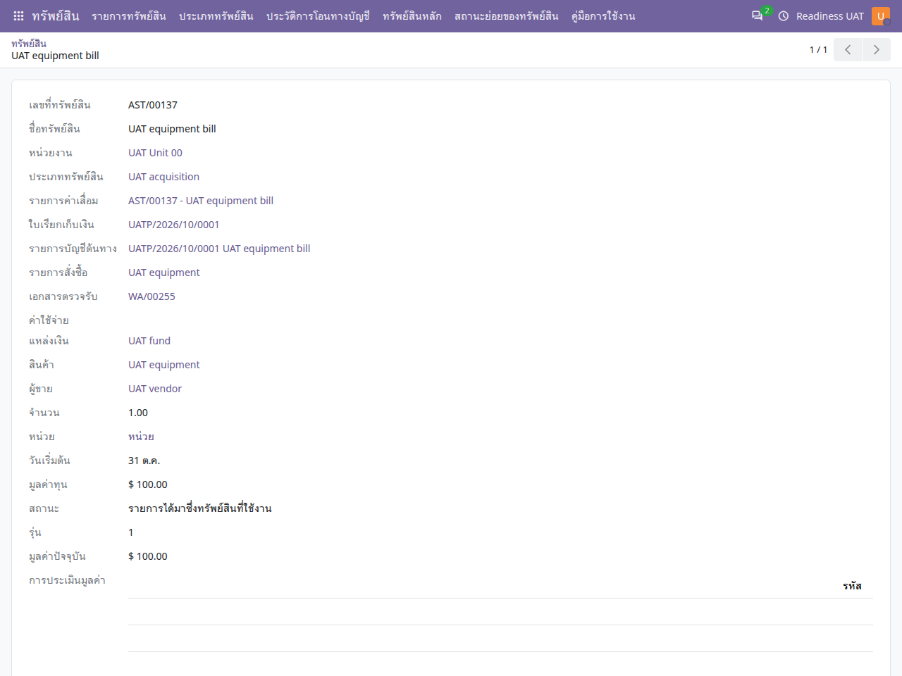

คู่มือการใช้งาน
ทรัพย์สิน
อ่านทะเบียนที่รับรู้จากต้นทาง เชื่อมรายการค่าเสื่อม และติดตามการโอนหรือจำหน่าย
ไม่พบข้อความ ลองใช้คำอื่นหรือล้างคำค้นหา
เริ่มใช้งานและอ่านหน้าจอ
เปิดแอปจากเมนูหลัก แล้วเลือก คู่มือการใช้งาน คู่มือเปิดในแท็บใหม่เพื่อให้ดูพร้อมหน้าทำงานได้ เลือกแอปอื่นจากรายการด้านซ้าย หรือค้นหาคำในคู่มือนี้ และใช้ปุ่มพิมพ์ / บันทึก PDF เมื่อต้องการสำเนา
- ตรวจบริษัทที่มุมขวาบนและหน่วยงานในเอกสารก่อนสร้างหรืออนุมัติ เมนูและปุ่มขึ้นกับสิทธิ์ของบัญชี
- หลังแก้ข้อมูล ให้ใช้ปุ่มบันทึก / ไอคอนบันทึกตามที่แบบฟอร์มแสดง แล้วตรวจสถานะและเลขเอกสารก่อนออกจากหน้า
- ภาพประกอบเป็นข้อมูลจำลอง ชื่อรายการ ภาษา หรือเลขเอกสารอาจต่างจากบัญชีของคุณ ตัวเลขในภาพไม่ใช่ค่าที่ต้องกรอก
- ข้อความผิดเงื่อนไขให้จดเลขเอกสารและข้อความที่แสดง ส่งให้ผู้รับผิดชอบงานตรวจ อย่าส่งรหัสผ่านหรือข้อมูลเข้าสู่ระบบ
- ถ้าคู่มือเปิดแล้วภาพหรือภาษาเก่าค้าง ให้บันทึกงานในหน้าระบบก่อน แล้วรีเฟรชแท็บคู่มือ
ทะเบียนและรายการค่าเสื่อม
| ข้อมูล | ความหมาย |
|---|---|
| ทะเบียนรับทรัพย์สิน | บันทึกที่มาจากใบเรียกเก็บเงินหรือรายจ่ายที่เข้าเงื่อนไข เก็บความสัมพันธ์กับหน่วยงานและรายการต้นทาง |
| รายการค่าเสื่อม | เอนจินคำนวณและเอกสารบัญชีค่าเสื่อมที่เชื่อมกับทะเบียน |
| ประเภททรัพย์สิน | กำหนดนโยบายและบัญชีที่ต้องตรวจให้ถูกก่อนดำเนินงาน |
- ต้นทางที่เข้าเงื่อนไข
- ทะเบียนทรัพย์สิน
- รายการค่าเสื่อม
- ตรวจตารางและลงบัญชี
- โอน / จำหน่าย
ตรวจต้นทางและทะเบียน
ทรัพย์สิน → รายการทรัพย์สิน
- ค้นหาทะเบียนจากเลขที่ทรัพย์สิน ชื่อ หน่วยงาน หรือเอกสารบัญชีต้นทาง
- ตรวจบริษัท มูลค่า วันที่เริ่ม ประเภท และจำนวนว่าตรงกับการได้มาจริง
- เปิดใบเรียกเก็บเงินหรือรายการต้นทางที่เชื่อมเพื่อตรวจหลักฐานและการตรวจรับเมื่อกำหนด
- ทะเบียนรับทรัพย์สินถูกป้องกันการสร้าง/แก้/ลบทั่วไป ให้เริ่มจากกระบวนการรับรู้ต้นทางที่ตั้งไว้

สร้างและตรวจค่าเสื่อม
- ผู้จัดการทรัพย์สินตรวจประเภท มูลค่าและวันที่ แล้วกด สร้างรายการค่าเสื่อม เมื่อยังไม่มีรายการเชื่อม
- เปิดรายการค่าเสื่อมและตรวจวิธีคำนวณ ระยะเวลา วันที่เริ่ม มูลค่าคงเหลือ บัญชี และสมุดรายวัน
- ตรวจตารางค่าเสื่อมก่อนเปิดใช้งานและลงบัญชีตามสิทธิ์
- ตรวจเอกสารบัญชีที่สร้างและสถานะการลงบัญชี การเห็นตารางคำนวณไม่ได้หมายความว่าลงบัญชีทุกรอบแล้ว
นโยบายทรัพย์สินไทยและทรัพย์สินระหว่างก่อสร้าง
นโยบายรายวันและทรัพย์สินมูลค่าต่ำใช้ตามประเภทที่ตั้งไว้และเอกสารจริง สำหรับทรัพย์สินระหว่างก่อสร้าง ให้ตรวจรายการเอนจินต้นทาง ปลายทาง วันที่ และสมุดรายวันก่อนใช้หน้าต่างโอน ตรวจมูลค่าต้นทาง/ปลายทางและประวัติการโอนบัญชีหลังดำเนินการ
จำหน่าย คืนต้นทาง หรือแก้ไข
การจำหน่ายต้องระบุเหตุผล วันที่ มูลค่าที่เกี่ยวข้อง และตรวจเอกสารบัญชีที่เกิดขึ้นตามนโยบาย การลดหนี้หรือกลับรายการต้นทางต้องตรวจผลต่อทะเบียนและค่าเสื่อมร่วมกัน ระบบคงประวัติการได้มาเดิม ไม่แก้ยอดทะเบียนเพื่อทับผลย้อนหลัง
คำถามที่พบบ่อย
| อาการ | ตรวจอย่างไร |
|---|---|
| ไม่พบทุกรายการในทะเบียน | ตรวจบริษัท หน่วยงาน ประเภทสินค้า การลงบัญชีต้นทาง และเงื่อนไขตรวจรับ |
| ไม่เห็นปุ่มสร้างค่าเสื่อม | ตรวจสิทธิ์ผู้จัดการและว่ามีรายการค่าเสื่อมเชื่อมแล้วหรือไม่ |
| สร้างค่าเสื่อมไม่ได้ | ตรวจประเภท วันที่ บัญชี และข้อมูลต้นทางที่ใช้รับรู้ทรัพย์สิน |
| รายการค่าเสื่อมเป็นภาษาอังกฤษบางค่า | ตรวจภาษาบัญชีและว่าเป็นชื่อข้อมูลที่ผู้ใช้กรอกไว้หรือข้อความของหน้าจอ ชื่อข้อมูลเดิมไม่ถูกแปลอัตโนมัติ |